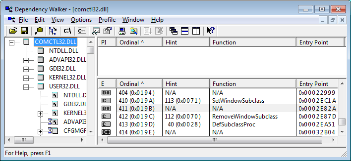

Way back in the dark ages, when comctl32.dll version 4.72 shipped with
Windows 98 and Internet Explorer 4.01, Microsoft slipped an absolute gem of a
tool into it. They provided a native means of subclassing windows that
automatically handled the issues related to
improper teardown. But, I hate to say, they played the typical Microsoft
games, and didn't document these fabulous calls. It wasn't until they shipped
Windows XP, many years later, that these four functions were actually
documented. Until then, they were only exported by ordinal, and indeed even
today only three of the four are exported by name. Okay, so what functions are
we talking about? Here ya go:
Private Declare Function SetWindowSubclass Lib "comctl32" Alias "#410" _
(ByVal hWnd As Long, ByVal pfnSubclass As Long, ByVal uIdSubclass As Long, _
ByVal dwRefData As Long) As Long
Private Declare Function GetWindowSubclass Lib "comctl32" Alias "#411" _
(ByVal hWnd As Long, ByVal pfnSubclass As Long, ByVal uIdSubclass As Long, _
pdwRefData As Long) As Long
Private Declare Function RemoveWindowSubclass Lib "comctl32" Alias "#412" _
(ByVal hWnd As Long, ByVal pfnSubclass As Long, ByVal uIdSubclass As Long) _
As Long
Private Declare Function DefSubclassProc Lib "comctl32" Alias "#413" _
(ByVal hWnd As Long, ByVal uMsg As Long, ByVal wParam As Long, _
ByVal lParam As Long) As Long
Note how I've used Aliases to point at the ordinal export for each of these
functions. In XP, that's not necessary for any but #411 which still isn't
exported by name, even in Windows 7! If you don't use the ordinal aliases, these functions will
fail in Windows 2000 and all 9x versions.

The key to getting really excited about this set of functions will hit you
pretty quick when you try this sample. With this technique, you can set as many
hooks as you want, without any fear of unhooking them in the wrong order. The
sample demonstrates this by using individual classes to track on different
tasks, as well as dumping all the messages directly into the form itself. I
think you'll be excited by the possibilities.
What's In This Sample?
There are two modules you'll need to include in any application in which you
want to use this method of subclassing. The MHookXP.bas module contains the
routines you'll call to establish and destory hooks, and also the callback
routine that Windows will direct the messages to in place of the hooked window's
default message handler. The IHookXP.cls module contains the simple, one-method
interface you'll use to redirect message handling from the standard BAS module
callback into whatever object you want to handle events for any given window.
CHookMinMax.cls
Used to monitor WM_GETMINMAX messages, and restrict the ability of your
user to resize your window at will. May be used to set either minimum or
maximum dimensions for a window. Raises GetMinMax event to client,
which may then set any legitimate values, which are then passed back to
Windows. Maximum will be enforced even if user punches the Maximize button
on your form's toolbar.
CHookSnapEdge.cls
Used to mimic the functionality of my SnapDialog
sample, where a form is snapped to the edge of whatever monitor it's over
whenever the user drags it to within a specified number of pixels from the
edge. Achieves this effect by monitoring WM_WINDOWPOSCHANGING messages.
CHookMouseEvents.cls
This class provides the mysterious MouseEnter, MouseHover, and MouseLeave
events, as well as a few bonus features like when the user clicks the 4th or
5th buttons on a 5 button mouse. It also provides a collection based scheme
whereby you can add and remove windows to monitor just as you would to an
ordinary collection. All events are raised with the associated hWnd so you
can determine which control is under the mouse.
CHookMouseWheel.cls
Provides MouseWheel events, both vertical and horizontal, for any window
that doesn't handle it natively. As Windows has evolved, the base classes
that VB controls inherit from have slowly added scrollwheel support. But
Windows passes the WM_MOUSEWHEEL message on up the parent chain when this
isn't the case. So, one class can now monitor for any mousewheel activity
that isn't already being responded to.
Be sure to watch this page, as I'll no doubt be occasionally adding more
handlers to the mix!